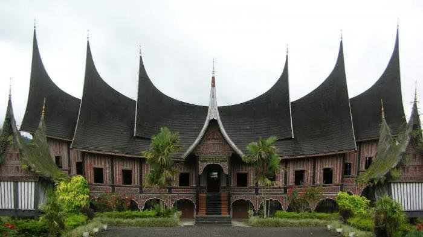

Sumatra Barat merupakan salah satu tujuan utama pariwisata di Indonesia. Fasilitas wisatanya yang cukup baik, serta sering diadakannya berbagai festival dan even internasional, menjadi pendorong datangnya wisatawan ke provinsi ini.[15] Beberapa kegiatan internasional yang diselenggarakan untuk menunjang pariwisata Sumatra Barat adalah lomba balap sepeda Tour de Singkarak, even paralayang Event Fly for Fun in Lake Maninjau, serta kejuaraan selancar Mentawai International Pro Surf Competition.[16] Sumatra Barat memiliki hampir semua jenis objek wisata alam seperti laut, pantai, danau, gunung, dan ngarai. Selain itu pariwisata Sumatra Barat juga banyak menjual budayanya yang khas, seperti Festival Tabuik, Festival Rendang, permainan kim, dan seni bertenun. Disamping wisata alam dan budaya, Sumatra Barat juga terkenal dengan wisata kulinernya. Sumatra Barat memiliki akomodasi wisata, seperti hotel dan agen perjalanan yang cukup baik. Pada akhir tahun 2012, provinsi ini telah memiliki 221 hotel dengan jumlah kamar mencapai 5.835 unit.[17] Namun hotel-hotel berbintang lima dan empat, hanya terdapat di Padang dan Bukittinggi.[18] Sedangkan untuk agen perjalanan di bawah keanggotaan ASITA, Sumatra Barat sudah memiliki lebih dari 100 agen. Untuk melengkapi fasilitas penunjang pariwisata, pemerintah juga menyediakan kereta api wisata yang beroperasi pada waktu tertentu.
Nuansa Minangkabau yang ada di dalam setiap musik Sumatra Barat yang dicampur dengan jenis musik apapun saat ini pasti akan terlihat dari setiap karya lagu yang beredar di masyarat. Hal ini karena musik Minang bisa diracik dengan aliran musik jenis apapun sehingga enak didengar dan bisa diterima oleh masyarakat. Unsur musik pemberi nuansa terdiri dari instrumen alat musik tradisional saluang, bansi, talempong, rabab, pupuik, serunai, dan gandang tabuik. Ada pula saluang jo dendang, yakni penyampaian dendang (cerita berlagu) yang diiringi saluang yang dikenal juga dengan nama sijobang.[19] Musik Minangkabau berupa instrumentalia dan lagu-lagu dari daerah ini pada umumnya bersifat melankolis. Hal ini berkaitan erat dengan struktur masyarakatnya yang memiliki rasa persaudaraan, hubungan kekeluargaan dan kecintaan akan kampung halaman yang tinggi ditunjang dengan kebiasaan pergi merantau.